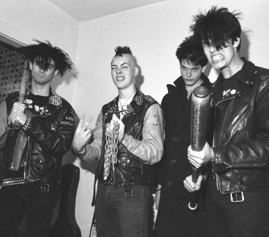

| Assorted Stuff | assorted scene stories | Half Life song lyrics |
| Assorted Scene Stories |
Not the Industrial Revolution
Plastic BTLS was a 2-person noise band formed with friend Lee Skirboll. We had few shows, and didn't get to finish many of them. Industrial/noise whatever you call it nowadays wasn't in great demand at all in 1982. In fact, people tried their best to get away from it. At one point, when I lived in the University of Pittsburgh dorms, I was on an elevator with a homemade BTLS button. Buttons were a mainstay of the alternative music culture, but if you had a band and wanted your own button, you had to make one somehow, which I did, out of an old button, rub-on letters and acrylic paint. Another student read the button, and when he took a closer look at it, commented, "Oh, I thought it was a real button," as if to say something isn't real unless it's machine made. That was my first clue that the perception of quite a few people was truly limited. And it hasn't changed much, has it? |
Just in between jobs....
My next band after Real Enemy was Rape of the South, a band I started when I thought, for some reason, I should get some sort of heavy-psych-thing going on in the tradition of Warsaw. We played one show with Half Life and the Bats on May 23rd. Though we weren't bad at all, the pull of hardcore was too great (as it always is), and I teamed up with ex-Real Enemy bassist and boy genius Steve Heineman and formed White Wreckage. White Wreckage was well received and mixed many elements of (then) modern underground music: hardcore, skate, and that undefinable sound found in bands such as the Effigies, Articles of Faith and Naked Raygun. It was at this point that I actually wrote More of the Same and Under the Knife, later played by Half Life. We recorded a fair bit of material, appeared on the Mystic Records Party Animal compilation, but aside from sending out some copies of the demo, never released a record. Half Life and White Wreckage played together often, and formed the axis of the Pittsburgh scene. White Wreckage broke up at the end of 1984 when I joined Half Life. |
| A note about terrorism.
During the White Wreckage years, I lived (as most punks did at one time or another) in the Oakland section of Pittsburgh. One of my roommates was a very nice fellow from Lebanon, a medical student. He called home occasionally, "During the day, because after dark the bombing starts" he said. He was going home for a visit, and shaved before doing so because he said bearded men were suspected of being radical. At this point, I started to think of what it must be like to live under the constant threat of bombings, explosions, and gunfire, and so I wrote Right to Hide. The song deals with the fact that then, there was no possibility of terrorism in America, and none of us living here could know what how good we have it. Half Life picked up the song, and here are the lyrics. |
| Something you need to know about being a
punk in 1985:
Whenever somebody saw us, they laughed. We got very little in the way of what you'd call "positive feedback" in those days. But the thing that got me was this---people with kids (in strollers and stuff) would throw insults at us. Imagine teaching your kid to judge others just because of their hair color? My favorite response was this: "Go ahead laugh, lady. Someday your kid might look like me." And the joke, as they say, is on them.
|
| Half Life band stories | assorted scene stories | Half Life song lyrics |